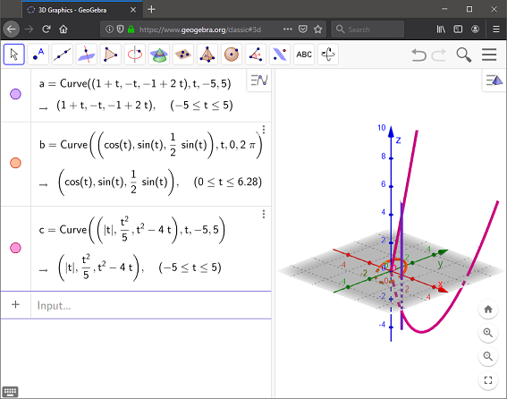
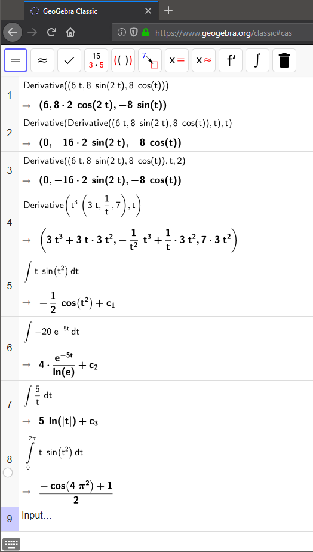

On this Page
GeoGebra
We can graph vector-valued functions in GeoGebra Classic 3D (new window) [https://www.geogebra.org/classic#3d] using the Curve command. There are several variations of this command, but the format we will use is stated below.
curve((x(t), y(t), z(t)), t, a, b)
For this command, the variables x, y, and z are the component functions, t is the parameter, and a and b are the interval of t we want to graph. Be sure to include the extra parenthesis around the component functions to make it a vector function. Here are a few examples. The first expression represents the line that we briefly discussed in the previous lesson.
Try graphing the two functions that were illustrated in the GeoGebra applets on the Curves page, \(\vec{r}(t) = \langle \sin{t}, t, \frac{t^2}{4} \rangle \) and \(\vec{r}(t) = \langle 4\cos{t}, \sin{t}, \frac{t}{2} \rangle \). Do your curves match what the curves looked like in the applets?
You can also use GeoGebra Classic CAS (new window) [https://www.geogebra.org/classic#cas] to evaluate derivatives and integrals. The command for evaluating derivatives is as follows.
Derivative(expression, variable, number).
Note that you must enter an expression or function. A vector function is acceptable, just put all the components in a parenthesis. The variable input is optional, unless you want to put a value in for the number. It represents the variable in your function that you want to take the derivatie with respect to, usually x or in our examples it is t. The number input is to find higher-order derivatives, so for example putting 2 in for the number would find the 2nd derivative. An alternate method is to nest derivative commands within each other, so "derivative(derivative(f(x),x))" would also return the 2nd derivative.
Similarly, the command for evaluating integrals is stated below.
Integral(function, variable, start, end).
You must enter a function, and it cannot be a vector. So integrating a vector would require typing an integral command for each component. If your function is a function of x, then the variable input is optional. If using any other letter, such as t, then you must enter that letter. The start and end inputs represent the a and b values of a definite integral. If you do not include these, then you will just get the indefinite integral (antiderivative).
In the image below, line (1) represents the basic derivative command. Notice the variable input is not included. Lines (2) and (3) represent different commands to get the 2nd derivative. Line (4) illustrates the Scalar Product Rule. Lines (5) through (7) show how to get the indefinite integral for the vector function \(\vec{r}(t) = \langle t \, \sin(t^2), -20 e^{-5t}, \frac{5}{t} \rangle \). Notice that a command is required for each component and an arbitrary constant is included. Also note that ln(e) = 1. Sometimes weird expressions like this may result depending on the algorithm used by GeoGebra. Similar behavior can result from other algebra systems. Lastly, line (8) represents the definite integral of the function \(f(t) = t \, \sin(t^2) \) from start = 0 to end = 2π. GeoGebra will reformat the "integral" commands from the input text expression to the symbolic expression you see in the image.
Note that as you start typing the words "derivative" or "integral" you will see variations of the above commands appear. Feel free to use whichever you want. The instructions above just illustrate the most general versions.
Also, the CAS feature is a little wonky at times. Sometimes trying to delete part of an expression will delete the whole line. Usually copy-and-paste doesn't work well either.
Lastly, you are welcome to use other resources to evaluate derivatives and integrals (and any other computations required for this course). Many students find Wolfram Alpha (new window) [https://www.wolframalpha.com/ and Symbolab (new window) [https://www.symbolab.com/] to be helpful as well. All of these resources have their own strengths and weaknesses. Just remember that you will not be able to use these resources on tests. Only a scientific calculator like the TI-36x will be allowed (it will do numerical derivatives and integrals).